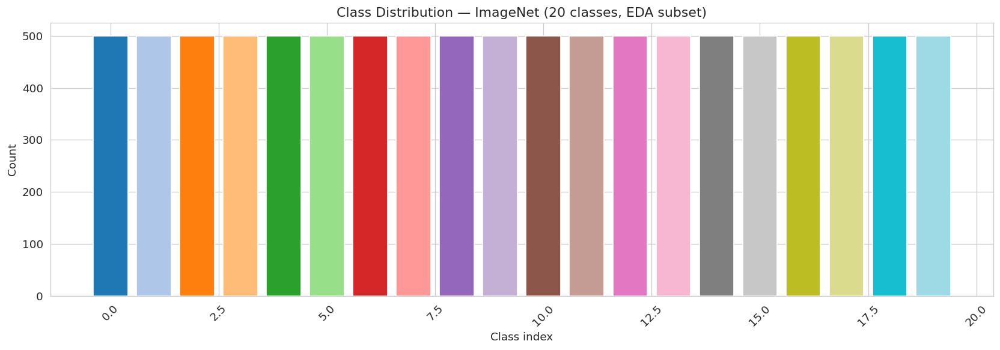
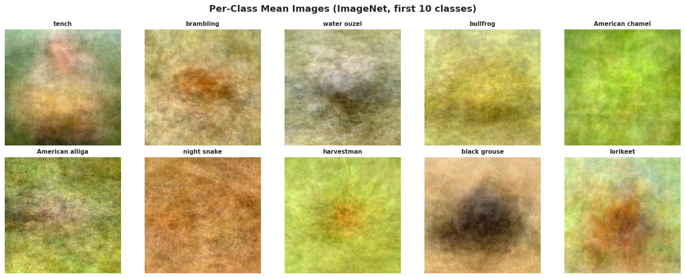
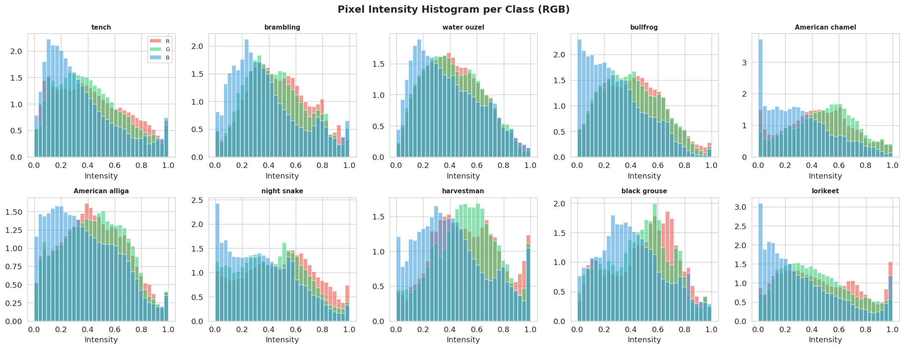
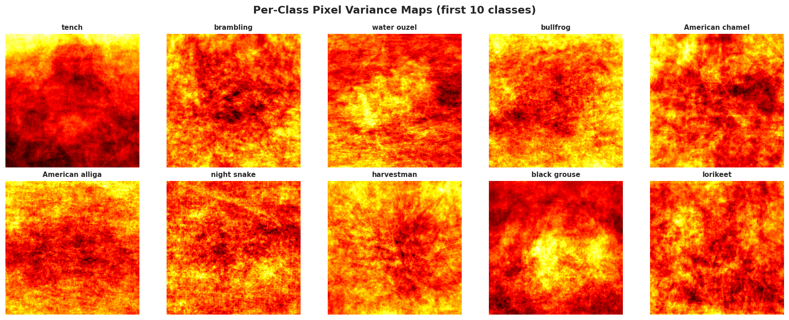
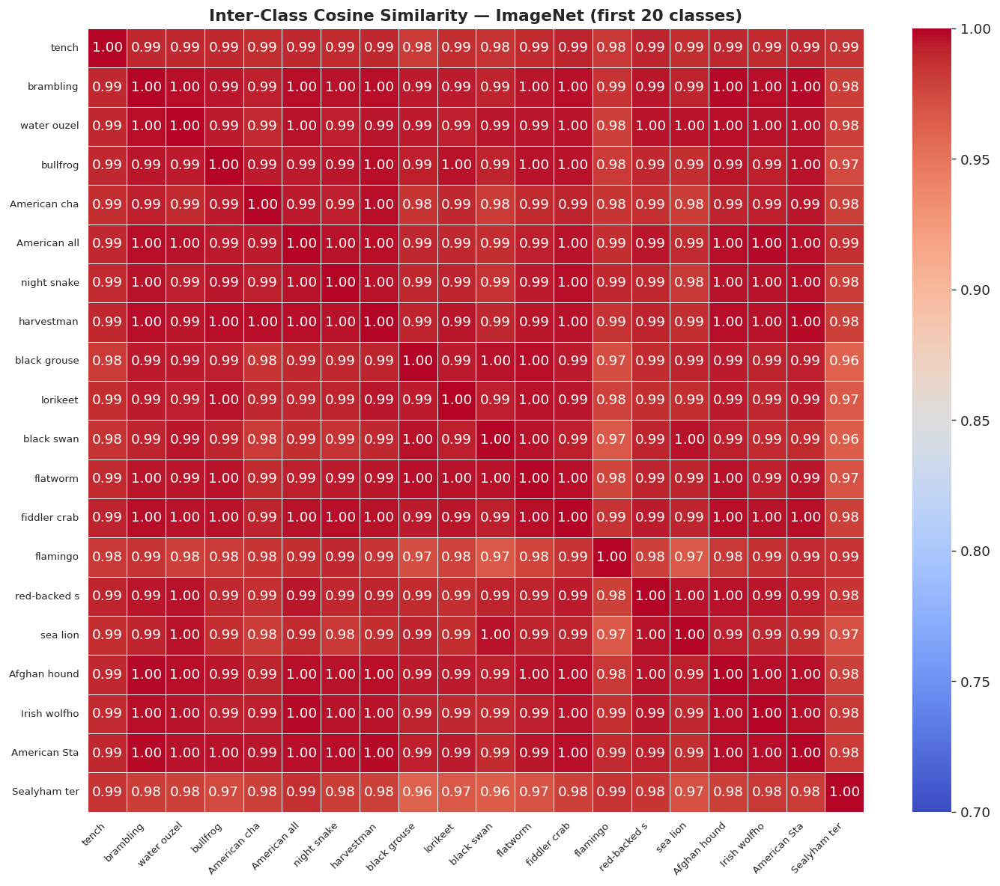

Image dataset overview & exploratory analysis
20-class ImageNet subset (10,000 images) with balanced sampling. This page summarizes splits and visual EDA figures provided in the image asset bundle.
Snapshot & splits
Counts and balance based on the provided ImageNet subset.
| Split | Images | Notes |
|---|---|---|
| Train | 7,000 | 70% of 10,000 total |
| Validation | 1,500 | 15% |
| Test | 1,500 | 15% |
| Total | 10,000 | 20 classes x 500 samples/class |
Class balance & samples
Balance confirmation and representative raw images.

Class distribution (std = 0.0)
Balanced sampling across all 20 classes; horizontal bars emphasize equal counts.

Sample grid
10-row x 5-column grid of raw samples; one row per class (first 10 classes).
Mean, variance, and histograms
Channel-wise and spatial summaries over the dataset.

Per-class mean images
2-row x 5-column grid of class means (averaged over 100 images/class, min-max normalized); strong contrast indicates spatial consistency.

Pixel intensity histograms
2-row x 5-column RGB histograms; overlayed channels highlight brightness and color spread per class.

Variance maps
2-row x 5-column variance maps; bright regions mark high intra-class variance or cluttered backgrounds.
Class similarity heatmap
Cosine similarity between per-class mean pixel vectors.

Cosine similarity across classes
Diagonal is 1.0; warm off-diagonal cells flag visually confusable class pairs.
EDA takeaways
Highlights derived directly from the provided figures and table.
What the figures show
- Class counts are perfectly balanced (std = 0.0) across 20 ImageNet classes.
- Sample grid covers all classes, giving a quick visual sense of inter-class diversity.
- Mean images reveal strong spatial consistency for several classes; backgrounds drive contrast.
- Pixel histograms surface brightness and color spread differences between classes.
- Cosine similarity heatmap highlights visually confusable class pairs via warm off-diagonal cells.
- Variance maps point out where intra-class variability or clutter is concentrated.
- Augmentation preview documents the 12 transforms used during training.